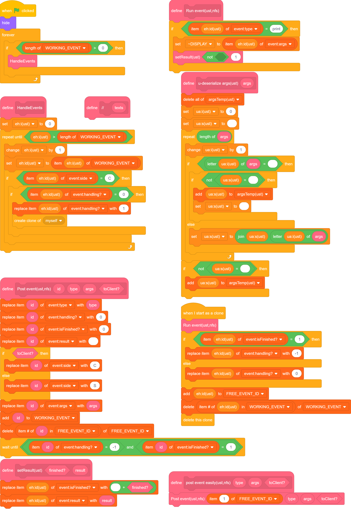
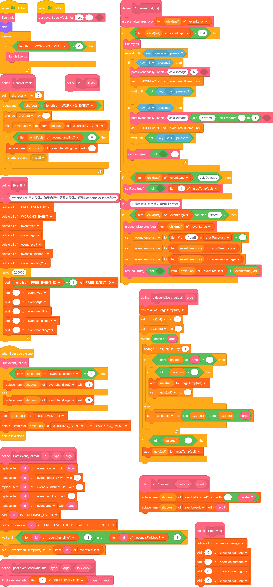

Events¶
话接上文 好像不是上文，反正差不多，我们实现了 command 表，能够向新线程单独传参了。
我们的目的是创建类似“函数对象”的东西，同时能做到“二次修改”。（后面将提到它的作用。）
总之，如果你学过 Java 的 Event，那这部分应该很好理解。（大概吧。）
实现等待线程的终止¶
command->Event¶
之前使用变量传递参数，这使得我们无法再获取新建克隆体信息的更新，也就阻止了我们进一步开发。
所以我们应使用 列表。
将之前传递许多参数改为传递多个列表，一般分为 type、args，为了标注 Event对外信息，新建result、isFinshed?、handling?。
写成 command 太长，我不演了。直接上 Event。（这部分与先前没有功能上的差异，只是增减了列表并修改了名称。）

总的来说，我们确实没实现啥，接下来我们会对子弹发射进行限制并增强：子弹会面朝鼠标进行转动修正、上一发子弹撞墙后才允许下一发。
等待的到来¶
我们已经有了 isFinished，只要记录它就好了，我们这里为了使参数更加稳定，进行了一次封装。

这样，我们发布Event时就不用指定id了（图左），而是按照既定方案寻址（图右）。
之后，经过简单的修改，我们实现了 等待。
追踪！¶
由于暂时不用URM，而且目前几乎没有交互部分，所以可以随便写。 比上一步就多了一个模块，就一块放图了。

值得注意的是,目前的实现是不兼容跳帧的。
不是因为没有URM，而是我们将克隆体用作了显示。（详见跳帧）
虽然不兼容跳帧可能不是很好，但你要是喜欢这种不兼容的写法，也是值得鼓励的。
当然，你得有足够理由去这么做，而不是单纯因为喜欢写法而这么做。
实现返回值¶
Event架构本身难以实现即时更新类的功能，例如碰撞造成伤害及相关内容。但是对于有序的不限时行为，能有更好的处理。
这是什么意思呢？
我们可以设置 Event 未完成，从而在下一帧重新进行一遍；
我们可以重复设置多次返回值，仅得到最后一次；
我们可以获取已有的返回值，得到新的返回值。
具体在扩展中有更好的体现。
简单分类¶
在 runEvent 中，我们如果直接罗列所有 Event，在找具体某个的时候显然是很复杂的。
我们可以拆分到独立几个函数中，如 BattleEvents、MenuEvents 等等。
这点在后面扩展的时候更为有用并有效。
在下方分类进行展示，此处略过。
扩展¶
这部分是我从使用这个架构 1 2 3 年多直到现在汇总出的一些好用的内容。
我会加上大致时间。
Event完成状态¶
如果你的 Event 忘记了实现用法，那如何发现呢？线程表的项数千千万，而错误仅在一个。
通过限定完成状态，等待完成，我们可以很好解决这一问题，这样没有实现的事件在卡住时，会阻断这一整个线程（除非你玩坏了）。
完成状态还在其他情况有用，我们可以设置不同的完成状态来更明确我们的实现目的。当然，一般是用不到这一点的，尽量使用 result。
具体实现统一在多端Event查看。
无返回值Event¶
在最原始的 Event 架构中，我们没有使用 scratch 的多线程（虽然我知道它的多线程是假的）。
但众所周知，scratch 每帧执行的次数有限，往一帧里多塞一些内容总会加快它的效率的。
具体实现统一在多端Event查看。
在最初我要创建多个线程时，我就添加了。大概2022年1月吧。
保证不同线程 不冲突 的情况下，才能这么做。
不要用这个方法在 Event 里lashi。想玩你的克隆体就自己去玩吧，别带上我的 Event 被踩。
嗯，攻击性有待增加。
...¶
...不知道有没有漏的内容，先留一下位置。
多端Event¶
和 无返回值Event 一起加的。
当你使用多角色，我们调用 Event 时为了不冲突，一般要对每个角色指定一个端名，在发送 Event 时指定端。
假如我们有 S 和 C 两个端，C 从 S 处获取数据后显示。
| S |  |
|---|---|
| C |  |
页面Event¶
专门作为 Manipulator 使用...
在最开始尝试战斗的模块完成后，我添加了这类仅 C 中作为 host 的函数。（必要时，S 中存在对应 channel，由 页面Event 唤起）
大概2022年7月。（平时打游戏学习没空捏）
一般没有对应的 Listeners/Triggers，也可看作可复用的、有局部变量、每次只对一个新克隆体操作的广播模块来使用。
通常搭配 setRender 等封装函数，直接或间接与 channels、R、U 等交互，实现根据输入操作页面、跳转页面（主用于切换 U、R 的状态）。
页面之间的切换使用此法可尽可能避免未定义的页面切换，保证程序在不同页面之间不受到干扰。
具体来说，切换页面时发送有 result 的 Event，使得原 页面Event 的运行暂停，而新的 页面Event 则开始运行，执行切换页面及新页面相关指令。
具体示例见channel。
子类标记参数¶
随 Triggers 的发展添加，大概2024年3月。
在常见参数后，可以添加不定数量的子类标记参数。（注意，这部分可能不保证合法性，可能有潜在的bug，需要更多定义去保证合法）
举例：假定OnDamageTo事件的参数有3个，为toEnemy?、toPos和amount，只跟收到伤害方有关。
这个事件的创建是合理的，因为伤害可以是无来源的。如果我们要关联来源，可以单加一个事件，但与 EventTriggers 和 EventListeners 等共用时会稍显冗余。
此时，我们可以在参数后面添加 子类标记参数。
假定我们将来源称作 fromE，对于 OnDamageTo(true,1,5)，我们改为 OnDamageTo(true,1,5,fromE(false, 0))。
在sc中，写作1 1 5 :fromE 0 3，我们一般将布尔类型写作数值。
我们正常情况下不会处理后面的值，而前缀符 :fromE 则可以帮助我们定位参数。
一般索引时，查找第一个 :[identifier](空格) 或 (空格):[identifier](空格) ，这可以避免一些问题。
简单示例：
 3
EventListeners/分类器¶
作用：直接根据指定对象，或提取泛化后类型，执行相关功能。
一般只在特定几个分类中存在。最初出现于约2022年3月，当我要区分招式时开发。
有两种用途。
一种是对已有的 Events 进行结果再处理（更常使用 EventTriggers）；
一种是在某处特别发送一个特殊的 Events，其处理结果的过程仅仅为赋值一个变量、简单运算或者空。
一般来说，这种方式的调用不与 Event 本身名称的含义强制相关。
我举个例子：
A 攻击 B，发送 OnDamageTo('B', 5, Type.ICE, fromE('A'))，由 AttackersEvents 接受到 fromE()。
AttackersEvents 找到对应于 Global.getType('A') 的 Listener，触发相关的攻击效果。
可能会触发若干以下几种效果：
执行正常攻击，（假设存在血量、护甲、伤害减免）计算减免后优先扣除护甲再扣除血量；
执行破甲攻击，直接破除所有护甲并计算减免，再直接扣除血量；
攻击后释放持续冻结效果。
看起来毫无章法的运作，在掌握 Event 之后，便能成为你的武器，在不同的情形下都得到良好的实现，优雅地实现他人无法做到的功能。
那么，回到两种用途上。
对于第一种用途，一类是无来源的、一类是有来源的。
对于有来源的情形，一般存在一个中间函数注册于 Event 中，用于存储该 Listener（与 Triggers 有相近之处）。
中间函数会拆分这些标记的状态，去除不正确（未定义）的函数，并留有位置用于注册以对应不同的 Listener。
对于无来源的情形，少数是直接基于原始 Event 的返回值、参数等进一步加工结果并执行相关内容。
而多数情形则是从有来源的情形下拆分相对共有的功能，或一部分 Listener 共有的代码行，来集中处理，并提高可读性。
参考代码:
这部分接着上次的进行了修改，对不同的 enemy 的伤害进行了不同内容的追加。

Event换头以及Event归类¶
最初出现于 CardWars II 中！在2023年末构思，具体实现日期不记得了。
作用：对于已有对象，强制类型转换（无对象、其他Event或其他类型的对象）。
用途：明确不同 Event 的用途，同时尽可能复用之前的代码。
换头的行为有三种，一种是仅换名，一种是换名换参，一种是换实现。
前两种与原始的 Event 是相同的，可以认为存在一些默认值。
对于第三种，可以破除 Listeners 的界域限制，同时提高原有部分的可读性（减少特殊情况分类），并提供合法的参数。
一般换头是基于全局或者某一类 Listeners。
简单示例（3组）：

EventTriggers/触发器¶
作用：将无指定对象的 Events 指定对象。
最初出现于约2024年1月！整个初版实现花费了数月 的晚自习课间。在我各个由战斗的游戏中均大量存在。
看起来触发、监听是相似的行为，然而实际上无论是内部还是外部的体现上，均有巨大的差异。
我举个例子：
A 攻击 B，发送 OnDamageTo('B', 5, Type.ICE, fromE('A'))，触发相关的攻击效果。
假如正常攻击。（即无特殊扩展效果）
此时旁边的一个实体也有特殊能力，但是与当前攻击行为完全无关，如何将这二者建立关联呢？
这就用到了 Triggers。
本质上，Triggers 的功能，是根据提前添加的 EventSubscribe 表，去监听这些 Event，然后提供相应的 换头Event，供我们要建立关联的Listeners，进而得以触发。
在我的逻辑中，固定有以下几个步骤：Check、Order、Before、Trigger、After。
这可以保证逻辑的正常运行。以下进行一个解释：
对于 Check，采用同步的方式（同时发送所有，不在乎运行顺序）进行，之后其他的部分（只针对 Check 返回 true 的情形），都是顺序执行。
这里发送的目标是所有或部分 Listeners，可由参数确定，也可由其他内容决定。
Order 用于排序之后 Listener 的运行顺序（由于是顺序执行！）。这步要尽可能确保返回的值是常量，而不是变量，因为不会提供其他 Event 相应的值。
你可以选择返回多组 Order，按照自己所需的方式（自定义优先级）排序。
后三步是一并执行的，但是用途不同。Before 和 After 主要用于进行其他 Trigger 的修改，一般仅在 Trigger中则是执行自己的模块。（尽量不要在这一步进行其他 Trigger！）
注意，大部分 Trigger 不必先于原本可调用的 Event，因为我们理论上留存了足够的 Before 和 After 用于这点（不够就单独摘出来再 Trigger）。
不排除少量情况语义明确时，可以进行 Trigger，但要注意不要过多调整运行顺序，避免出现BUG。
主要你能用这样的方式实现功能，那我们认为是合理的，但不一定是最优的（只有更优！），也不一定是优雅的。
我这里提供一个复杂的实例：

GlobalEvents¶
最初出现于 CardWars II 后期。约2024年8月。
见 此处。
...